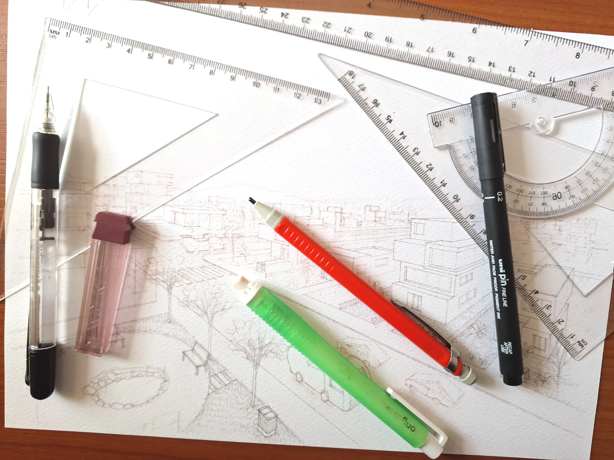
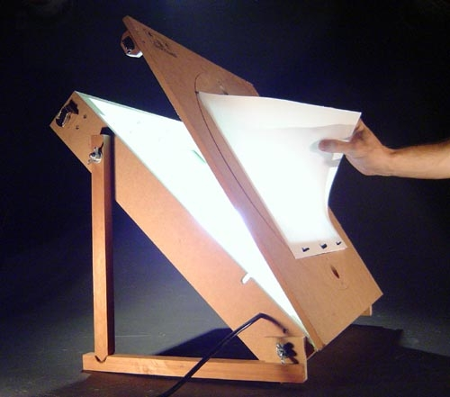
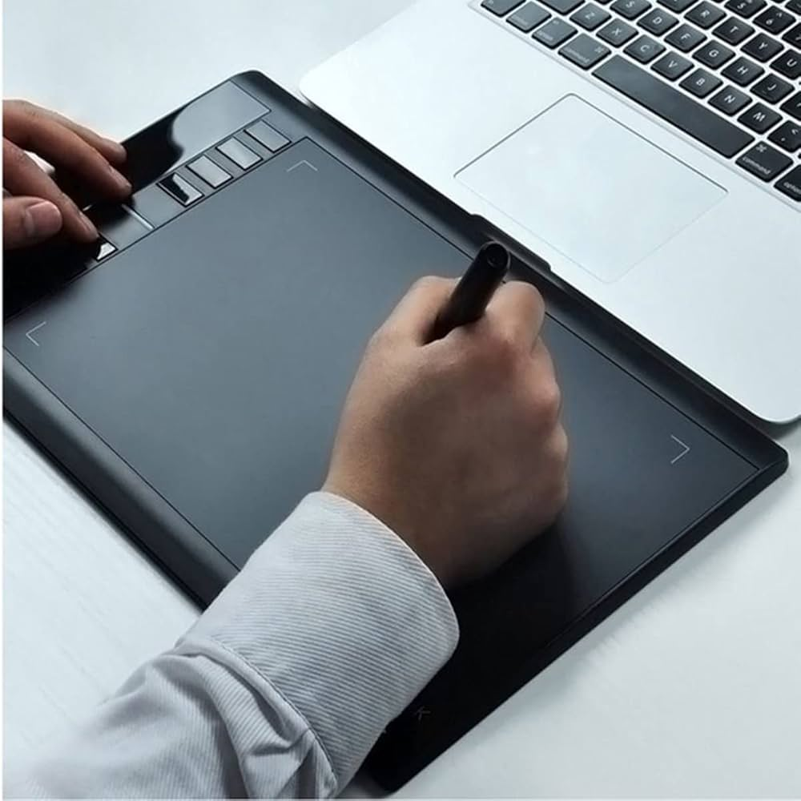
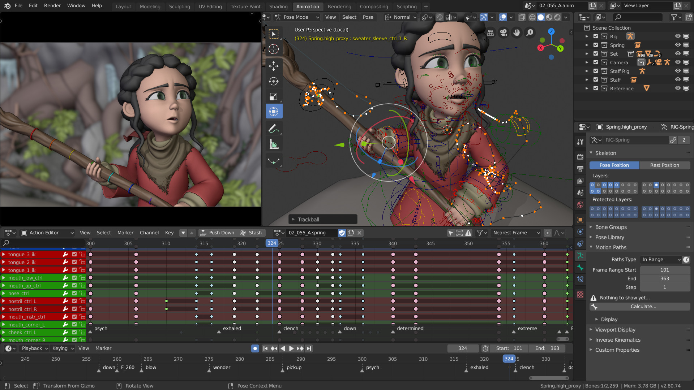
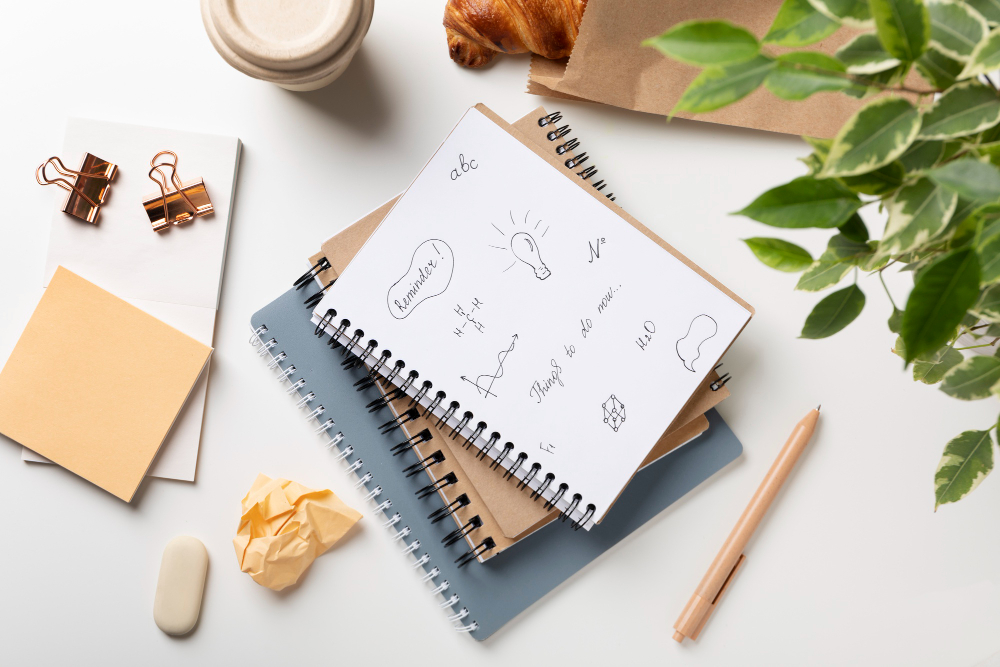

materiais para animadores
Uma seleção de materiais que sustentam o estudo e a prática da animação. Do básico ao avançado, escolha o que faz sentido para seu nível e objetivo.

Materiais Essenciais
Comece com o básico e evolua. Estes itens ajudam a construir fundamentos sólidos, seja no papel ou no digital.
materiais:
- Lápis HB, 2B e 4B
- Borracha macia (preferência por borracha branca)
- Apontador de boa lâmina
- Caderno de folhas lisas ou papel sulfite A4
- Régua e esquadros simples
- Canetas finas para acabamento

Animacao Tradicional
Para quem gosta do metodo classico quadro a quadro com papel e luz.
materiais:
- Mesa de luz (ou improviso com vidro e luminaria)
- Papel de animacao com perfuracao (se disponivel)
- Prancheta inclinavel
- Folhas de acetato para efeitos
- Flipbook para testes rapidos

Animacao Digital 2D
Ideal para quem trabalha com desenho digital e workflows mais rapidos.
materiais:
- Tablet com caneta (ou mesa digitalizadora)
- Computador com boa performance grafica
- Software de desenho/2D (gratuitos e pagos)
- Monitor com boa fidelidade de cor
- Armazenamento em nuvem ou HD externo

Animacao 3D
Para projetos com modelagem, rigging e render.
materiais:
- Computador com GPU dedicada
- Mouse ergonomico
- Software de modelagem 3D
- Bibliotecas de materiais e texturas
- Fones de ouvido para revisao de audio

Stop Motion e Cenografia
Aqui o mundo fisico vira set de filmagem.
materiais:
- Tripe estavel
- Smartphone ou camera
- Luzes difusas (softbox ou luminarias)
- Massinha, arames e estruturas
- Mini cenarios (papel, EVA, MDF, tecido)

Organizacao e Estudos
Material ajuda, mas rotina e referencia fazem a diferenca.
materiais:
- Caderno de estudos e rascunhos
- Pastas para referencias visuais
- Cronograma semanal de pratica
- Lista de exercicios (poses, timing, acting)
- Banco de referencias (videos e imagens)
Dicas de Compra e Economia
Nao precisa gastar muito no comeco. O foco e consistencia e pratica.
dicas:
- Comece com o minimo e evolua aos poucos
- Compre itens que voce realmente usa
- Priorize qualidade nos itens que afetam o resultado
- Teste opcoes gratuitas antes de pagar software
- Reaproveite materiais para cenarios e props